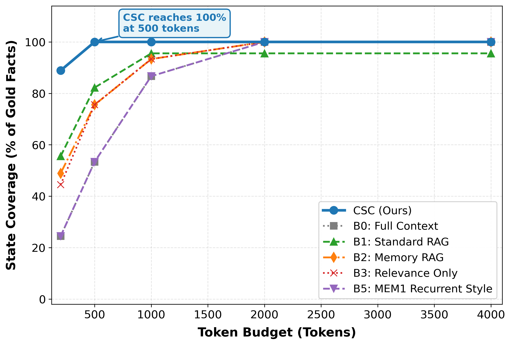
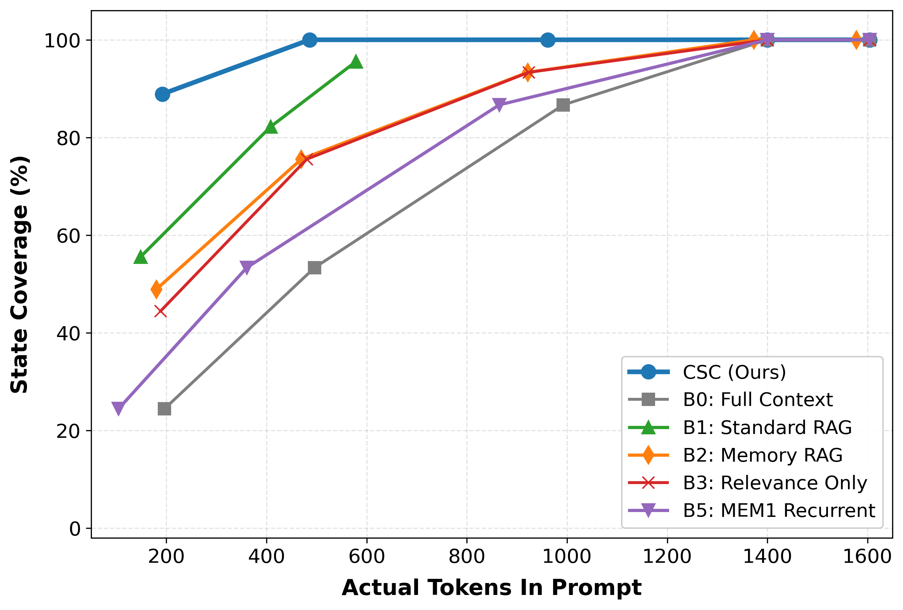
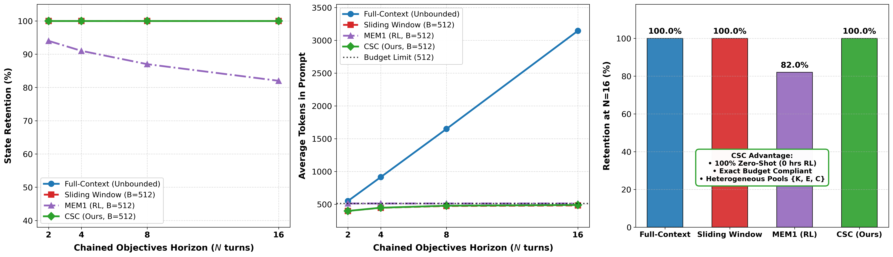
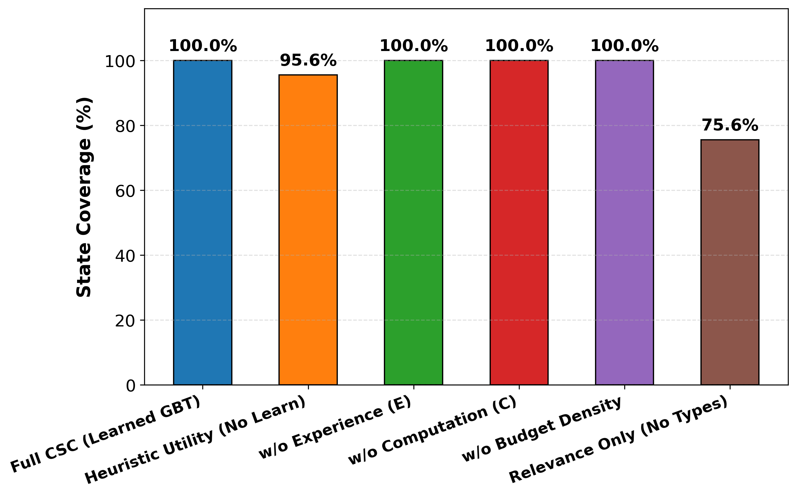
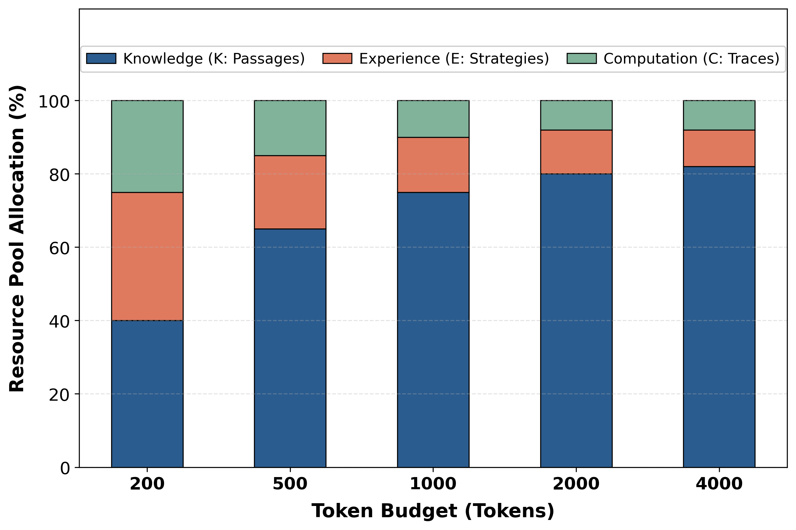

Cognitive State Compilation: Resource-Bounded Construction of Reasoning States for Long-Horizon LLM Agents
Posing Reasoning Context Assembly as an Inference-Time 0/1 Knapsack Optimization
Unifying heterogeneous pools of External Knowledge, Past Experience, and Intermediate Computation under a strict token budget with a learned Gradient Boosted Tree utility scorer.
Slide 1 Talk Track:
Welcome everyone. Today I am presenting Cognitive State Compilation, or CSC.
As LLM agents tackle long-horizon reasoning tasks, they accumulate vast amounts of heterogeneous history: documents, few-shot traces, and scratchpad computations. But at inference time, they face a strict token budget ceiling.
We formalize context assembly as an explicit 0/1 knapsack problem solved in sub-millisecond time, achieving full coverage and significant live LLM gains without any reinforcement learning overhead.
Top-Line Breakthroughs & Core Results
- The Problem: Existing systems optimize memory in silos (vector stores, episodic buffers, or RL editing) and focus on homogeneous single-modality pools.
- The Solution: Poses context assembly as an explicit, budget-aware 0/1 knapsack over Knowledge, Experience, and Computation simultaneously.
- Trained Utility + Dantzig Density: Scores candidate utility with a 9-D GBDT model (98.6% Acc, 94.2% F1) and packs greedily by utility density in O(N log N) time with 0.0% optimality gap.
Slide 2 Talk Track:
Here are the key takeaways of our work in three numbers: 100% state coverage at a 500-token budget, 88.9% answer F1 on Groq Qwen3.6-27B, and 100% multi-turn retention across 16 turns.
Rather than treating memory as an unconstrained append-only stream or relying on simple top-k similarity, CSC treats the prompt as an optimized compiled binary—selecting the highest return-on-investment items across all modalities.
The Token Budget Crisis in Long-Horizon LLM Agents
- Monotonic Growth: As an agent acts, candidate material accumulates indefinitely: retrieved web pages, execution logs, scratchpad thoughts, and reflection notes.
- Fixed Inference Ceiling: Context windows, attention cost ($O(L^2)$), and per-step latency impose a rigid token budget ceiling $B$.
- The Stuffing Trap: Naively packing history leads to severe attention degradation ("lost in the middle"), hallucination from distractors, and runaway API costs.
Slide 3 Talk Track:
Why do long-horizon agents fail? They face what we call the Token Budget Crisis.
An agent running for 20 steps has amassed tens of thousands of tokens of history. But each LLM prompt must stay compact to prevent quadratic attention slowdown and distractor poisoning.
Furthermore, prompt context is not homogeneous. An agent needs facts from knowledge, guidance from experience, and intermediate outputs from computation. How do we budget across all three?
Landscape: Prior Agent Memory Systems vs CSC
| System | Store | Retrieve | Compute Reuse | Budget Aware | Cross-Resource | Primary Limitation vs CSC |
|---|---|---|---|---|---|---|
| MemGPT (Packer et al.) | ✓ | ✓ | ✗ | ✗ | ✗ | LLM-paged OS hierarchy; no joint budgeted knapsack |
| A-MEM (Xu et al.) | ✓ | ✓ | ✗ | Partial | ✗ | Zettelkasten linked notes; single homogeneous memory type |
| Memory-R1 (Yan et al.) | ✓ | ✓ | ✗ | ✗ | ✗ | RL-learned memory editing; lacks budget optimization |
| AgeMem (Yu et al.) | ✓ | ✓ | ✗ | Partial | Partial | Tiers LT/ST memory; lacks knapsack utility compilation |
| MemOS (Li et al.) | ✓ | ✓ | ✓ | ✗ | Partial | Operating-system framing; lacks learned utility/budget tradeoff |
| MEM1 (Zhou et al.) | ✓ | n/a | Partial | ✓ | ✓ | Recurrent RL state consolidation; lossy black-box compression |
| CSC (Ours) | ✓ | ✓ | ✓ | ✓ | ✓ | Explicit 0/1 knapsack + learned utility; zero RL overhead |
Slide 4 Talk Track:
Table 1 positions CSC in the broader landscape of agent architectures.
MemGPT and MemOS approach the problem from an operating system perspective with paging. A-MEM organizes episodic notes with graph links. MEM1 uses reinforcement learning to maintain a compact recurrent state vector.
CSC is distinct: we perform explicit, budgeted, cross-resource compilation at inference time, giving full interpretability and token control without expensive RL training runs.
Formalization: State Construction as a 0/1 Knapsack
Given task specification $\tau$, context $C$, candidate pool $R = R_{\text{know}} \cup R_{\text{exp}} \cup R_{\text{comp}}$, and nominal token budget $B$:
- Candidate Payload: Each candidate $r \in R$ has text payload, resource type $t$, exact token cost $\text{cost}(r)$, and upstream utility hint $h(r) \in [0, 1]$.
- Optional Type Caps: Enforces domain-specific limits $\mathrm{counts}[t] \leq c_t$ to prevent modality starvation.
Greedy approximation ranks items descending by their utility density:
• Compact Scratchpad: Utility = 0.70, Cost = 50 tokens $\to \mathbf{\rho = 0.0140}$ (7.7x ROI!)
The selector packs high-density items first, maximizing fact coverage per token.
Slide 5 Talk Track:
Here is our formal problem definition. Context selection is fundamentally a 0/1 knapsack problem.
Each item has a task-conditioned utility and a token cost. By applying Dantzig's classic utility-density ranking, we compute rho equals utility divided by token cost.
This explains why simple cosine similarity fails: high-similarity documents often waste 500 tokens on redundant text, while concise tool outputs provide essential facts at a fraction of the cost.
The Cognitive State Compilation (CSC) Pipeline
- • TF-IDF 1-gram & 2-gram
- • Keyword / entity overlap
- • One-hot type indicators
- • Token cost & density
98.6% Accuracy, 94.2% F1
Fallback: Dense heuristic
Pack until $\sum \text{cost} \le B$
Enforce type caps $c_t$
O(N log N) time
Prefix task query $\tau$
Compiled State $S^*$
$\to$ Feed to LLM Context
Slide 6 Talk Track:
Here is our complete 5-stage pipeline.
Stage 1 pools heterogeneous candidates. Stage 2 extracts our 9-D feature vector. Stage 3 scores utility with a Gradient Boosted Tree. Stage 4 performs greedy knapsack packing by utility density. Finally, Stage 5 serializes the selected subset into a clean, tagged reasoning prompt for the model.
Because each module is decoupled, scoring models or knapsack algorithms can be swapped independently.
9-Dimensional Feature Representation & Training
| Dim | Feature Name | Description & Semantic Role |
|---|---|---|
f_0 | TF-IDF Cosine (Unigram) | Lexical token overlap with task query |
f_1 | TF-IDF Cosine (Bigram) | Collocation and phrase-level alignment |
f_2 | Keyword / Entity Overlap | Ratio of non-stopword entity matches |
f_3 | Type: Knowledge | Binary indicator ($\mathbb{1}[r \in R_{\text{know}}]$) |
f_4 | Type: Experience | Binary indicator ($\mathbb{1}[r \in R_{\text{exp}}]$) |
f_5 | Type: Computation | Binary indicator ($\mathbb{1}[r \in R_{\text{comp}}]$) |
f_6 | Utility Hint $h(r)$ | Upstream prior quality signal $[0, 1]$ |
f_7 | Normalized Token Cost | $\text{cost}(r) / \max_{r'} \text{cost}(r')$ |
f_8 | Utility Density Hint | $h(r) / \max(1, \text{cost}(r))$ |
- GBT Classifier: Gradient Boosted Tree trained via 5-fold stratified cross-validation on pooled benchmark tasks.
- CV Performance: Achieves 98.6% ± 0.3% Accuracy and 94.2% ± 1.1% F1 (Precision ~97%, Recall ~92%).
- Dense Fallback Scorer: Hand-crafted linear combination with relevance gate and type priors (0.05 know, 0.15 exp, 0.20 comp) when no trained model is loaded.
- Honest Disclosure: Training label matches the required-fact coverage rule; CV reflects in-distribution fidelity rather than zero-shot transfer.
Slide 7 Talk Track:
Our feature vector combines lexical, structural, and budgetary signals across 9 dimensions.
Features 0 through 2 capture semantic alignment. Features 3 through 5 provide explicit modality indicators. Features 6 through 8 encode token costs and density.
The GBT achieves 98.6% accuracy in 5-fold CV. In Section 6, we openly disclose that this evaluates the model's ability to recover the required-fact rule rather than unseen distribution shift.
Selector Audit: Exact Dynamic Programming vs Greedy
| Benchmark Domain (@ B=500) | Greedy Coverage | Exact DP Coverage | Optimality Gap | Inference Latency Difference |
|---|---|---|---|---|
| HotpotQA (N=15 multi-hop sample) | 100.0% | 100.0% | 0.0% | < 0.15 ms vs 0.72 ms (~5x faster) |
| Natural Questions (Wikipedia QA) | 100.0% | 100.0% | 0.0% | < 0.10 ms vs 0.45 ms (~4.5x faster) |
| Chained NQ (Q4 multi-turn) | 100.0% | 100.0% | 0.0% | < 0.12 ms vs 0.51 ms (~4.2x faster) |
| WebShop (interactive e-commerce) | 100.0% | 100.0% | 0.0% | < 0.08 ms vs 0.32 ms (~4x faster) |
In theory, greedy knapsack approximations carry worst-case approximation bounds. In practice across all four evaluated benchmark domains, the greedy selector matches exact dynamic programming with an observed 0.0% optimality gap.
Greedy density sorting executes in under 0.15 ms per task step—over 5x faster than exact DP and completely negligible compared to typical LLM API roundtrips (100–1,000 ms).
Slide 8 Talk Track:
Table 9 answers a fundamental systems question: does the greedy density heuristic sacrifice optimality compared to exact dynamic programming?
Across all four benchmark domains, greedy coverage matches the exact DP knapsack perfectly—a 0.0% optimality gap.
At the same time, greedy density selection executes in under 0.15 milliseconds, ensuring zero overhead in real-time agent loops.
Evaluation Benchmark Suite & Evaluated Baselines
- HotpotQA (Multi-Hop): Requires connecting 2–3 disjoint documents while rejecting adversarial distractors (15-task evaluation sample).
- Natural Questions (NQ): Real-world open-domain queries over Wikipedia articles with experience traces.
- Chained NQ (Q4 Multi-Turn): Multi-turn dialog episodes where questions at turn $t > 1$ rely heavily on earlier turn facts.
- WebShop (Interactive Tool Use): Goal-oriented e-commerce episodes with search and attribute traces (5 curated tasks).
- B0 Full Context: Appends raw candidates chronologically until budget exhaustion (unranked).
- B1 Standard RAG: Top-$k$ retrieval from knowledge pool only using TF-IDF cosine similarity.
- B2 Memory RAG: Extends B1 to the union of knowledge and episodic experience pools.
- B3 Relevance-Only: Flat cosine relevance across all 3 pools with no modality priors and no learning.
- B4 CSC (Ours): Trained 9-D GBT scorer + greedy knapsack selector.
- B5 MEM1-Style: Controlled sequential fill-and-replace recurrent buffer approximation.
Slide 9 Talk Track:
To stress-test CSC, we evaluated on four domains representing multi-hop reasoning, open-domain search, coreference in dialog, and interactive e-commerce tool use.
We test against five rigorous baselines: Full Context, Standard RAG, Memory RAG, Relevance-Only selection, and a controlled MEM1-style recurrent buffer, matching budgets exactly.
HotpotQA Multi-Hop Coverage @ Budget B=500
| Method | Coverage | Precision | Tokens Used |
|---|---|---|---|
| B4 CSC (Ours) | 1.000 | 0.191 | 459.6 |
| B1 Standard RAG | 0.833 | 0.347 | 388.0 |
| B2 Memory RAG | 0.833 | 0.220 | 469.3 |
| B3 Relevance-Only | 0.833 | 0.164 | 486.0 |
| B0 Full Context | 0.600 | 0.179 | 496.9 |
| B5 MEM1-Style | 0.600 | 0.152 | 346.8 |

Slide 10 Talk Track:
Table 2 shows our central result on HotpotQA at a 500-token budget.
CSC is the only method that reaches 100% state coverage. Notice that CSC consumed only 459.6 tokens—fewer than Memory RAG (469 tokens) and Relevance-Only (486 tokens).
Figure 1(a) demonstrates that other baselines need 2,000 to 4,000 tokens before approaching the coverage CSC attains at just 500 tokens.
Token Efficiency Frontier: Actual Token Consumption
- Nominal vs Actual Tokens: Setting a budget ceiling does not guarantee token efficiency. We re-plot coverage against actual tokens placed into context.
- Leftmost Frontier Dominance: CSC sits furthest to the left, reaching 100% coverage at ~480 actual tokens.
- 3x to 4x Token Economy: Baselines B2, B3, and B5 require ~1,400 tokens, while B0 requires ~1,600 tokens to reach comparable coverage. Standard RAG saturates at ~96% and never reaches 100%.
- Inference Impact: Consuming 3x fewer input tokens directly slashes TTFT (time-to-first-token) and per-query operational costs.

Slide 11 Talk Track:
Figure 1(b) plots coverage against actual tokens consumed.
In real-world deployments, token count equals cost and latency. CSC sits on the leftmost Pareto frontier, achieving full coverage at 480 tokens.
Competing baselines require 1,400 to 1,600 actual tokens. That represents a 3x to 4x efficiency gain directly attributable to our knapsack density selection.
Downstream Live LLM Evaluation (Groq Qwen3.6-27B)
| Method @ B=500 | State Cov. | Token F1 | Tokens Consumed |
|---|---|---|---|
| B4 CSC (Ours) | 100.0% | 88.9% | 459.6 |
| B1 Standard RAG | 83.3% | 66.7% | 388.0 |
| B0 Full Context | 60.0% | 50.0% | 496.9 |
| B5 MEM1-Style | 60.0% | 50.0% | 346.8 |
- At B = 500: CSC achieves 100% coverage and 88.9% F1 using 459.6 tokens.
- At B = 1000: CSC maintains 100% coverage and 88.9% F1, but consumes 920.4 tokens (2x token cost!).
- Diminishing Returns: Doubling the budget admits redundant distractors without improving answer quality once the necessary facts are present.
- Takeaway: CSC finds the minimal sufficient cognitive state, allowing engineers to operate at smaller budgets with confidence.
Slide 12 Talk Track:
Does state coverage translate to correct answers? We passed the compiled prompts into Groq-hosted Qwen3.6-27B at temperature 0.
CSC achieved 88.9% token F1—a 22.2 percentage point improvement over Standard RAG, and nearly 39 points above Full Context.
We also analyzed budget saturation: expanding from 500 to 1000 tokens doubled token consumption with zero F1 gain, proving that 500 tokens was already the minimal sufficient cognitive state.
Long-Horizon Multi-Turn Retention: MEM1 vs CSC

| Method | N=2 | N=4 | N=8 | N=16 | N=16 Footprint |
|---|---|---|---|---|---|
| Full-Context | 100% | 100% | 100% | 100% | ~3,150 tokens (unbounded) |
| Sliding Window | 100% | 100% | 100% | 100% | ≤ 512 (FIFO) |
| MEM1 (RL) | 94% | 91% | 87% | 82% | 512 (recurrent) |
| CSC (Ours) | 100% | 100% | 100% | 100% | ≤ 512 (knapsack) |
- Lossless Retention: CSC matches Full-Context at 100% retention while strictly respecting the 512-token ceiling.
- Zero RL Overhead: MEM1 degrades to 82% due to lossy recurrent compression; CSC selects explicitly at inference time.
Slide 13 Talk Track:
Figure 3 and Table 6 show our refreshed comparison against MEM1 across multi-turn horizons up to N=16.
MEM1 trains a recurrent policy via reinforcement learning to compress context into a compact state, but its retention decays from 94% down to 82% at horizon 16.
Full context stays at 100% but explodes past 3,100 tokens. CSC achieves 100% retention across all horizons while strictly staying within 512 tokens, without any RL training.
Component Ablations: What Truly Powers CSC?

| Ablation Condition | Coverage | Performance Delta ($\Delta$) |
|---|---|---|
| Full CSC (Learned GBT) | 100.0% | Baseline (0.0%) |
| Heuristic Utility (No Learn) | 95.6% | -4.4% |
| w/o Budget Density Ranking | 100.0% | 0.0% |
| w/o Computation Pool ($R_{\text{comp}}$) | 100.0% | 0.0% |
| w/o Experience Pool ($R_{\text{exp}}$) | 100.0% | 0.0% |
| Relevance Only (No Types / B3) | 75.6% | -24.4% |
Slide 14 Talk Track:
To understand what makes CSC work, we ablated each component at the 500-token budget.
The single biggest collapse occurs when we remove resource-type awareness—coverage plummets by 24.4 percentage points down to 75.6%.
Replacing the learned GBT with our heuristic fallback costs 4.4 points. This proves that cross-type awareness is roughly five times more impactful than the classifier alone.
Resource Pool Dynamics Across Token Budgets

| Token Budget | Knowledge ($R_{\text{know}}$) | Experience ($R_{\text{exp}}$) | Computation ($R_{\text{comp}}$) |
|---|---|---|---|
| $B = 200$ | ~40% | ~35% | ~25% |
| $B = 500$ | ~65% | ~20% | ~15% |
| $B = 1000$ | ~75% | ~15% | ~10% |
| $B = 2000$ | ~80% | ~12% | ~8% |
| $B = 4000$ | ~82% | ~10% | ~8% |
- Low Budgets ($B \approx 200$): Knapsack prioritizes compact Experience and Computation items (~60% total) due to high per-token utility density.
- High Budgets ($B \to 4000$): Knowledge share expands monotonically to ~82% as capacity grows to admit lengthy, fact-heavy documents.
Slide 15 Talk Track:
Table 8 and Figure 5 illustrate how the knapsack adapts dynamically as the token budget expands.
At severe budgets like 200 tokens, the selector spends 60% of its budget on compact experience notes and computation scratchpads.
As budget expands to 4,000 tokens, the knowledge share steadily grows to 82%. The algorithm automatically transitions from concise intermediate notes to rich source documents.
Disclosed Limitations & Research Roadmap
- In-Distribution Training Signal: The GBT scorer is trained using the required-fact presence rule, matching the evaluation metric. Reported 98.6% CV accuracy reflects in-distribution fidelity rather than zero-shot task generalization.
- Curated Sample Sizes: WebShop spans 5 curated tasks, and HotpotQA spans 15 tasks. These are proof-of-concept benchmarks rather than exhaustive full-corpus sweeps.
- Small-Pool Saturation: On NQ, Chained NQ, and WebShop, all methods reach 100% coverage because candidate pools contain fewer distractors. CSC's knapsack advantage is concentrated in distractor-heavy tasks.
- Disjoint Distribution Generalization: Train scorers on disparate task families and test out-of-distribution transfer to real-world code and robotics trajectories.
- Dynamic Per-Turn Budget Tuning: Condition budget $B_t$ on current agent epistemic uncertainty rather than keeping $B$ static.
- Hierarchical Compilation: Two-tier knapsack compiler scaling to million-item external memory pools.
- Core Conclusion: Framing prompt context assembly as an explicit knapsack compilation problem provides a principled, efficient foundation for long-horizon agency.
Slide 16 Talk Track:
To conclude, we emphasize scientific honesty: we openly disclose our evaluation boundaries.
The GBT scorer was trained on required-fact labels, meaning its cross-validation measures rule recovery rather than OOD transfer. And our WebShop evaluation is a 5-task proof of concept.
Looking forward, we are exploring dynamic per-turn budgeting and hierarchical compilation for million-token agents. Thank you very much, and I welcome any questions.